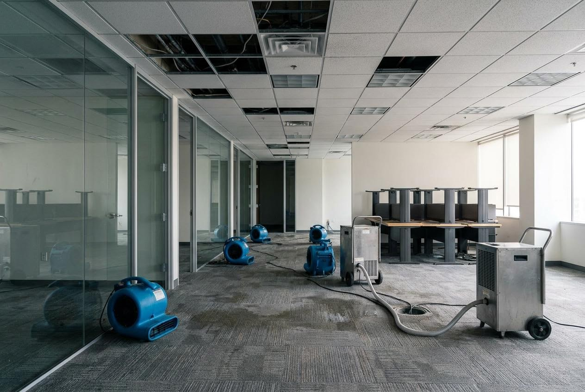

Reviews


Every hour of downtime costs your business money. Sunrise Restoration delivers commercial-grade restoration services throughout Sunrise with the urgency and professionalism your operation demands.
Commercial water damage restoration requires specialized equipment, scheduling flexibility, and an understanding of business continuity needs. From HOA common area flood response to retail water damage cleanup and tenant coordination, Sunrise Restoration has the expertise to restore your property quickly and minimize business interruption.
Unaddressed water damage on commercial property creates health risks, structural deterioration, and significant financial losses. That's why we offer priority scheduling, maintenance contracts, and rapid emergency response designed specifically for commercial clients.

For priority water damage service at your Sunrise business, call Sunrise Restoration.
Call (717) 277-3779 TodayHomeowner associations and managed communities face unique water damage challenges that demand a fast, coordinated response. Shared plumbing, aging infrastructure, common areas, and multi-unit construction each raise the odds of a water loss in a managed community. For associations, Sunrise Restoration pairs prevention, meaning plumbing inspections and moisture monitoring in common areas, with response: coordinating emergencies with the board and property manager, extracting water quickly, drying the structure, and remediating mold across the units involved.
For anyone running an HOA, managing liability is one of the biggest concerns. When water moves from one unit to the next or reaches a common area, the legal and financial fallout can be significant. Our proactive prevention programs identify vulnerabilities before they become incidents, with documented inspections and service records that demonstrate due diligence. Boards can budget for coming maintenance and prevention work using our yearly property assessments and the detailed reports that follow each service call.
Our team sits down with maintenance committees, property managers, and HOA boards to build plans for prevention and response that the community can afford and rely on. In occupied communities, our crews know how to work efficiently: they coordinate with residents, keep disruption low, and restore damaged areas fast.
Call Sunrise Restoration for professional HOA water damage prevention and response programs tailored to your community.
Get Help: (717) 277-3779A quick response to water damage keeps tenants, stock, and day-to-day business protected at commercial campuses, shopping centers, and office parks. Water damage in a commercial setting can shut down operations, damage expensive equipment and inventory, and drive away customers. Moisture that is left alone leads to mold, which puts occupants' health at risk and brings expensive remediation. Sunrise Restoration provides comprehensive water damage restoration for commercial business properties including emergency water extraction, commercial-grade structural drying, tenant coordination, content protection and pack-out, and direct insurance billing.
For property managers overseeing multiple commercial locations, we offer portfolio maintenance contracts that provide consistent service quality across all properties, consolidated billing, priority scheduling, and a single point of contact for all restoration needs. Keeping a commercial property open is urgent, and our commercial account managers plan the work around that to limit disruption for customers and tenants.
Major RestorationWhen a major water event strikes a commercial property, such as a fire sprinkler discharge, roof failure, or major pipe burst, the scale of damage demands specialized expertise and equipment. When damage reaches full floors or whole buildings, Sunrise Restoration brings multiple crews and industrial equipment to commercial sites anywhere in Sunrise.
Large-loss work covers six things: truck-mounted extraction, industrial drying and dehumidification over wide areas, inventory and pack-out of items worth saving, working alongside general contractors on structural repairs, complete records for your commercial insurance claim, and assistance with tenant relocation and communication. We understand that construction and business timelines are critical, and we staff projects appropriately to meet your schedule without compromising quality.
Commercial properties in Sunrise, large or small, can get a restoration program from Sunrise Restoration that fits.
Call (717) 277-3779 NowCommercial property owners have a duty of care to maintain safe conditions on their properties. Injuries, lawsuits, and damaged property can all trace back to a sudden failure from inadequate waterproofing, concealed moisture, or plumbing past its prime. A Sunrise Restoration risk assessment looks at every part of the property for exposure to water intrusion, with moisture monitoring tools and thermal imaging doing the detection. Findings are delivered in writing, with risks identified, priorities assigned, and specific prevention measures recommended.
These assessments serve a dual purpose: they protect people and property by identifying vulnerabilities, and they demonstrate due diligence that can protect you legally if an incident occurs. Courts and insurance companies look favorably on property owners who maintain regular professional inspections and act on expert recommendations. Our recommendation is a moisture assessment once a year for every commercial property, and more frequent checks in high-risk spots like mechanical rooms, basements, and older plumbing systems.
24/7 ResponseWhen water hits a commercial property without warning, it can create safety hazards right away, ruin inventory and equipment, keep employees and customers out, and open the owner up to liability claims. Commercial properties in Sunrise and nearby areas can reach Sunrise Restoration for emergency restoration 24/7, at any hour. We send an experienced crew without delay as soon as your call comes in on our emergency line for businesses.
Sewage backups, roof leaks, sprinkler discharges, and major pipe bursts are all within what our commercial emergency trucks are equipped to handle. First we secure the area and shut off the water as fast as we can, and after that, extraction and drying start so people can get back in safely. Every commercial emergency response includes thorough documentation for your insurance claim and liability records.
Ongoing ProtectionNothing is more cost-effective for a business than stopping water damage before it ever happens. Whatever kind of commercial building you run, and whatever its size, Sunrise Restoration will customize a preventive maintenance program for it. A program covers plumbing inspections on a schedule, waterproofing assessments, monitoring of moisture in high-risk areas, planning for emergencies, and preparation ahead of storm season. We shape every program around the property's budget, how the building is occupied, and its particular infrastructure.
Catastrophic water events become significantly less likely with preventive maintenance, which typically runs a small fraction of what emergency restoration costs. Our commercial clients consistently report fewer emergency situations, reduced insurance claims, and better overall property protection after implementing a prevention program. To see what a plan built around your property and budget would look like, give us a call.
Keep your commercial property safe and operational with reliable water damage restoration from Sunrise Restoration.
Call (717) 277-3779 Now